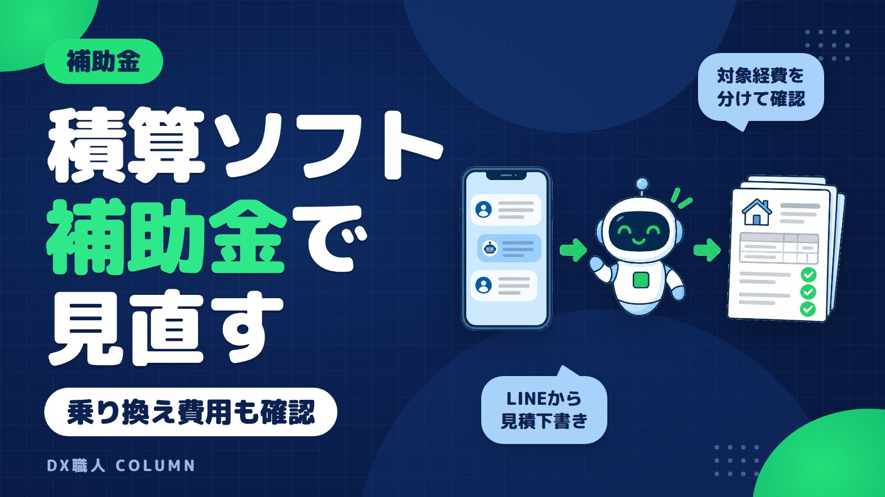

積算ソフトの補助金対象経費と乗り換えコスト削減建設業の確認点
積算ソフトを替えたいと思っても、初期費用やデータ移行が気になり、後回しになる会社は多いです。この記事では、建設業で補助金の対象になり得る費用、対象外になりやすい費用、乗り換え前の確認点をQ&Aで整理します。最後に、LINEの見積依頼をAIシステムで下書きする流れも紹介します。

この記事の要点
- 積算ソフトは対象になる場合あり
- 経費は明細に分けて確認
- 契約や支払い時期に注意
- 乗り換えは二重入力を減らす
- LINE入力も見積下書きに使える
積算ソフトの補助金は使える場合があります
結論から言うと、積算ソフトや見積ソフトは、補助金の対象として検討できる場合があります。建設業でよく見るのは、IT導入補助金です。業務用ソフトやクラウドサービスが対象になることがあります。
ただし、積算ソフトなら何でも対象とは言えません。年度、申請枠、事務局に登録されたITツールかどうかで扱いが変わります。補助金額、対象期間、締切も年度ごとに変わります。
この記事は2026年11月4日時点の考え方で整理しています。実際に申請する前には、必ず最新の公募要領で確認します。制度ごとに要件があるので、ご相談の際に確認します。
大事なのは、ソフト名だけで判断しないことです。自社のどの作業を変えるのかを先に見ます。積算、見積作成、請求、台帳化、現場からの依頼整理のどこをシステム化するかで、確認する経費が変わります。
Q1. 対象になり得る費用はどこまでですか
補助金で確認するのは、ソフトの月額利用料や購入費だけではありません。導入に必要な初期設定、データ移行、連携設定などが関係する場合があります。
クラウド型とは、インターネット上で使う仕組みです。事務所のパソコンだけでなく、現場や移動中のスマホから確認しやすい点があります。建設業の積算ソフトでも、この形が増えています。
| 費用の種類 | 建設業での例 | 確認すること |
|---|---|---|
| ソフト利用料 | 積算、見積、請求の月額費 | 登録ツールか、対象期間はどこまでか |
| 初期設定費 | 会社名、書式、工種の設定 | 見積書に明細が分かれているか |
| マスタ設定費 | 品目、単価、協力会社の登録 | マスタは基本データのことです |
| データ移行費 | 既存の単価表、顧客、案件履歴 | 移す範囲と形式が明確か |
| 連携設定費 | 会計、請求、台帳との接続 | 何と何をつなぐ費用か |
| AI機能の費用 | 見積依頼の整理、明細の下書き | ソフト機能の範囲に入るか |
この表は、あくまで確認の入り口です。制度によって、対象になる費用とならない費用があります。見積書の中で項目が分かれているほど、確認が進めやすくなります。
「積算ソフト一式」とだけ書かれている見積書では、中身が分かりません。月額利用料、初期設定、データ移行、連携設定を分けてもらうことが大切です。
Q2. 対象外になりやすい費用はありますか
業務に使う費用でも、すべてが補助対象になるわけではありません。特に、パソコン、タブレット、スマホなどの汎用機器は、制度や枠によって扱いが分かれます。
通信費、プリンター、机、通常の事務用品も注意が必要です。積算や見積に使うとしても、対象外になる場合があります。消耗品や日常的な維持費も、確認が必要です。
既に契約しているソフトの利用料も注意します。補助金は、新しく導入する取組を対象にする制度が多いです。前から払っている費用を後から補助対象にできるとは限りません。
もう一つ大事なのは、契約や支払いの時期です。多くの補助金では、決められた手続きより前に契約、発注、支払いをした費用が対象外になる場合があります。急いで契約してから申請するのは危険です。
また、補助金は後払いになる制度が多いです。先に会社が支払い、後から交付される流れになる場合があります。資金繰りも含めて、導入時期を決める必要があります。
Q3. 乗り換えで本当にコスト削減できますか
積算ソフトの乗り換えで見るべきコストは、ソフト代だけではありません。今の作業にかかっている時間も、会社の負担です。現場から来た内容をExcelに打ち直す時間、協力会社の見積を転記する時間、請求書へ写す時間も含めて考えます。
たとえば、今の状態が次のようになっている会社は、見直す余地があります。
- 現場からLINEや電話で見積依頼が来る
- 事務所でメモを見ながらExcelに入力する
- 単価表を別ファイルで探す
- 見積書を作った後、請求書にまた転記する
- 過去案件を探すときにファイル名で迷う
乗り換えで減らしたいのは、こうした二重入力です。積算ソフトを入れても、入口が電話や紙のままだと、打ち直しは残ります。見積依頼の入口から、見積書、請求、台帳までの流れを見ることが大切です。
乗り換え時には、旧ソフトと新ソフトを同時に払う期間も出やすいです。解約月、契約更新月、データ出力の費用を先に確認します。ここを見落とすと、補助金を使っても負担感が残ります。
見積の打ち直しを減らす考え方は、見積書の打ち直しを減らす、AIの使いどころでも整理しています。積算ソフトを替える前に、どの入力を減らしたいかを決めると失敗しにくくなります。
Q4. 建設業がIT導入補助金で見るポイントは何ですか
建設業で積算ソフトの補助金を考えるときは、IT導入補助金の確認から始めることが多いです。IT導入補助金は、中小企業などの業務用ITツール導入を後押しする制度です。
確認するポイントは、主に次の4つです。
- 導入したい積算ソフトが登録ツールか
- 販売する会社が制度上の事業者として登録されているか
- 申請枠と対象経費が合っているか
- 契約、発注、支払いの順番が合っているか
ここは年度によって変わります。昨年使えた内容が、今年も同じとは限りません。補助額や対象期間も、最新の公募要領で確認します。
建設業の場合、積算だけでなく、見積、請求、案件管理まで含めて考えると整理しやすいです。単なる計算ソフトではなく、日々の見積業務をどう短くするかを説明できるほうが、導入目的が明確になります。
LINEで使えるAIシステムとIT導入補助金の流れは、IT導入補助金で建設業がLINEのAIシステムを導入する流れでも紹介しています。積算ソフトと合わせて、見積依頼の入口を見直す会社にも参考になります。
Q5. 申請前に見積書で何を分ければよいですか
申請前には、業者から取る見積書の書き方が大切です。内容が大ざっぱだと、対象経費の確認がしにくくなります。
最低限、次の項目は分けて確認したいところです。
- 積算ソフトの利用料またはライセンス費
- 初期設定費
- 会社の書式や帳票の設定費
- 単価表や品目データの移行費
- 顧客、物件、案件履歴の移行費
- 会計ソフトや請求ソフトとの連携費
- AI機能や入力補助機能の費用
- 保守、問い合わせ対応、更新費
保守や問い合わせ対応、更新費は、制度によって扱いが分かれる場合があります。対象になるかどうかを、他の費用と混ぜずに確認します。
また、値引きがある場合も注意します。どの項目から値引きされているのかが分からないと、補助対象額の確認で迷います。見積書、注文書、請求書の内容が大きくずれないようにします。
交付決定とは、補助対象として進めてよいと通知されることです。多くの制度では、この前に契約や支払いをすると対象外になる場合があります。急ぎの導入でも、順番を確認してから進めます。
Q6. 乗り換え前に現場と事務所で何を確認しますか
積算ソフトの乗り換えは、事務所だけで決めると失敗しやすいです。現場から来る情報が足りなければ、結局は電話で聞き直すことになります。
まず、今の作業を短く書き出します。難しい資料は不要です。次の内容が分かれば、相談が進めやすくなります。
- 月に作る見積書のおおよその件数
- よくある工事の種類
- 使っている単価表やExcel
- 協力会社からの見積の受け取り方
- 見積書、請求書、台帳の書式
- 過去データを何年分見たいか
- 現場から事務所へ送る情報の方法
現場の人が入力しやすい形も大事です。新しい画面を何枚も開く方法だと、使われないことがあります。LINEで現場名、工事内容、写真、希望期限を送るだけなら、始めやすい会社も多いです。
データ移行も早めに確認します。古いソフトからデータを出せるか、Excelで持っている単価表を読めるか、写真や図面をどう扱うかを見ます。移行できないデータがある場合は、どこまで手入力するかを決めます。
乗り換えで大切なのは、完璧なソフト探しではありません。毎日の打ち直しをどこから減らすかです。見積依頼、積算、請求、台帳のうち、一番詰まっている場所から変えると進めやすくなります。
DX職人ならLINEの見積依頼からAIが下書きします
積算ソフトだけを入れても、現場からの依頼がばらばらだと事務所の負担は残ります。DX職人では、いつものLINEから使えるAIシステムを提案しています。新しいアプリの画面を覚えるより、普段のトークに送る形に近づけます。
たとえば、現場からLINEに次のように送ります。
「○○邸、外壁補修。写真3枚。足場あり。来週中に概算見積を出したい」
AIシステムは、現場名、工事内容、写真、期限を整理します。不足している情報があれば、面積、既存仕様、材料、搬入条件などを聞き返します。そのうえで、見積書の下書きや明細案を作ります。
流れはシンプルです。
- 現場や事務所からLINEに見積依頼を送る
- AIシステムが必要項目を整理する
- 不足している情報を聞き返す
- 見積書の下書きや明細案を作る
- 事務所で確認して正式な見積にする
- 必要に応じて請求や台帳にもつなげる
最終金額や数量は、人が確認します。AIに責任ある積算を任せきるのではなく、打ち直しと見落としを減らす補助役として使います。
顧客名、住所、図面、契約条件などの扱いも決めておく必要があります。AIに送る情報の考え方は、AIに入力してよい情報、避けたほうがよい情報で整理しています。
積算ソフトの補助金を考えるときは、ソフト単体ではなく、見積依頼の入口から見直すと効果が出やすくなります。DX職人では、補助金の確認と、LINEで使えるAIシステムの形を合わせてご相談いただけます。
よくある質問
積算ソフトの導入に補助金は使えますか？
使える場合があります。特にIT導入補助金では、登録された業務用ソフトが対象になることがあります。ただし年度、申請枠、ツール登録状況で変わるため、最新の公募要領で確認します。
積算ソフトの乗り換えでデータ移行費も対象になりますか？
対象になり得る場合があります。単価表、顧客情報、案件履歴などの移行費は、見積書で項目を分けて確認します。制度ごとに扱いが違うため、申請前に確認が必要です。
パソコンやタブレットも補助対象になりますか？
汎用的に使える機器は、対象外になる場合があります。制度や申請枠で扱いが変わるため、積算ソフトの利用料や設定費と分けて確認します。先に購入しないことも大切です。
IT導入補助金は申請前に契約しても大丈夫ですか？
多くの制度では、決められた手続きより前の契約、発注、支払いが対象外になる場合があります。急ぎでも、交付決定などの順番を確認してから進める必要があります。
LINEで受けた見積依頼をAIで下書きできますか？
可能です。DX職人では、LINEに送った現場名、工事内容、写真、期限をAIシステムが整理し、見積書の下書きや確認項目を作る流れを提案しています。最終確認は人が行います。